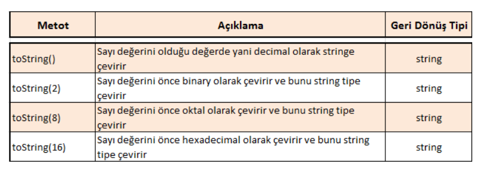
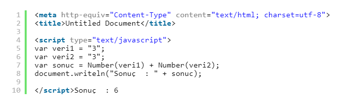
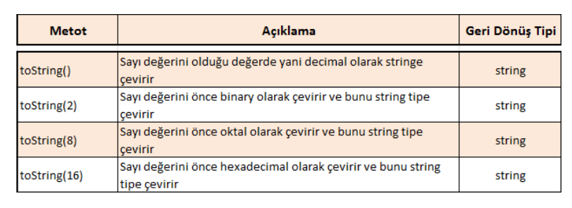

Tip Dönüşümleri
Bu kod bloğu sonucu ekranda şu yazar. Sonuç 1 : 6 Sonuç 2 : 33
Birinci sonuç 6 iken ikincisi 33 tür. Bunun nedeni ilkinde ikisini number olarak kabul etti, sayısal toplama yaptı. İkincisinde ise string olarak kabul etti ve string toplama yaptı. İşte karşışıklık bu noktada başlıyor. İleride çok kompleks işlemler yaptığınızı düşünün, işi JavaScripte bırakacak değilsiniz elbette. 🙂
İşte bunu engelleyebilmek için tip dönüşümlerine ihtiyaç duyarız.
Number tipleri String tipine çevirmek : Bu işlemi gerçekleştirebilmek için toString() metodunu kullanırız. Böylelikle sayı olarak verilen değeri string tipine çevirebiliriz.

Sonuç olarak ekrana 33 yazılır. Örnekte görüldüğü üzere parantez içinde sayısal değer verdim, bunu toString() metodu ile stringe çevirdim. Birde alternatif olarak string değeri “3” şeklinde değilde String(3) şeklinde yazıp ikisini topladım. Sonuç olarak 33 elde edildi.
toString metodunun çeşitli kullanım şekilleri mevcuttur. Aşağıdaki tabloda bu açıklamaları görebilirsiniz :
String tipleri Number tiplere dönüştürmek : String tipleri sayı tiplere dönüştürmek içinde Number fonksiyonunu kullanmaktayız.
Sonuç olarak 6 yazar. Çünkü string 3 değerlerini Number yaptık ve 3+3 işlemini sayısal olarak gerçekleştirdik. String tipleri Number tipe dönüştürmek için 3 tip mevcuttur.
